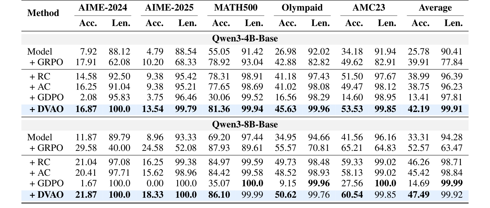
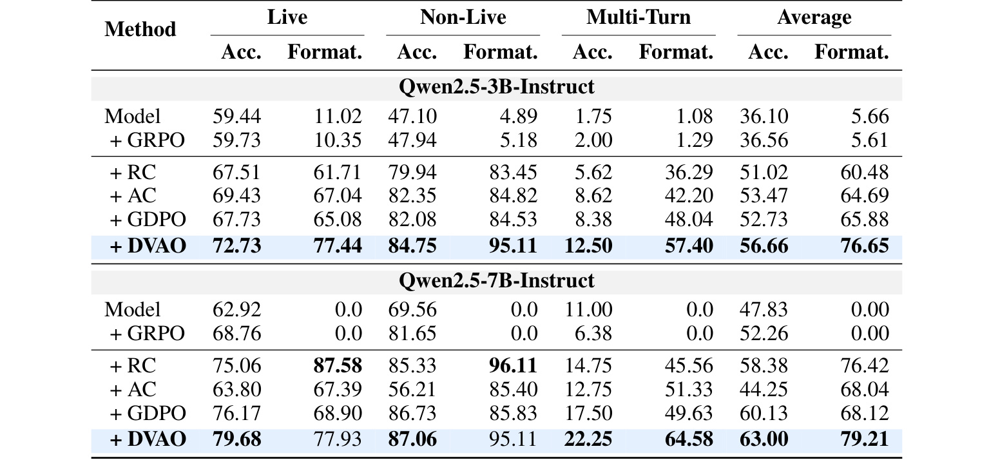
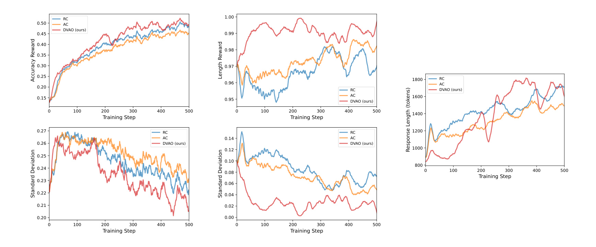
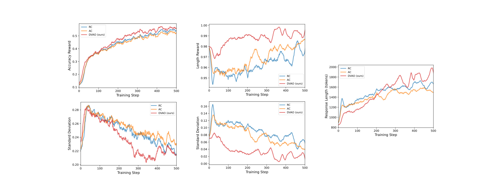
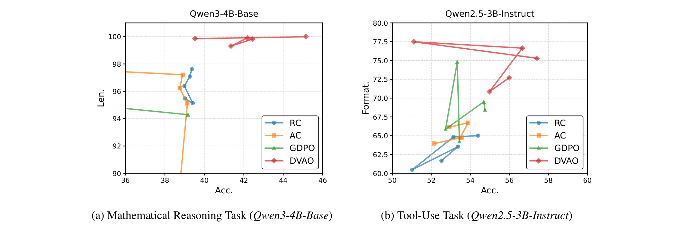

论文：DVAO: Dynamic Variance-adaptive Advantage Optimization for Multi-reward Reinforcement Learning
作者：Guochao Jiang, Jingyi Song, Guofeng Quan, Chuzhan Hao, Guohua Liu, Yuewei Zhang
机构：Alibaba Cloud Computing
来源：arXiv:2605.25604，v1，2026-05-25，主类别 cs.CL
方向：LLM 后训练、GRPO、多奖励强化学习、对齐优化
这篇论文关注一个很具体但在大模型后训练里越来越常见的问题：同一个策略更新同时被多个奖励牵引时，怎样把这些奖励变成一个稳定、可解释、又不会过早牺牲某个目标的 advantage 信号。DVAO 的核心不是再增加一个 reward model，也不是把多目标搜索做成复杂的外层调参，而是在 GRPO 的 rollout group 内用每个奖励目标的经验方差动态改写 advantage 组合权重。
1. 背景和问题
GRPO 之所以在 LLM 后训练里流行，是因为它把 PPO 中昂贵的 value model 去掉，转而在同一个 query 的多条 rollout 内计算相对优势。对于数学推理、代码生成、工具调用这类任务，模型一次采样若干回答，奖励函数给出每条回答的分数，算法用组内均值和标准差把奖励转成 advantage，再用裁剪过的 policy ratio 更新策略。这个范式很适合大模型训练的工程约束：显存压力小，pipeline 比 value-based PPO 更简单，也更容易和 rule-based reward、判题器、格式检查器结合。
真正麻烦的地方在于，实际部署的 LLM 很少只追求一个奖励。数学推理不只是答对，还要控制 reasoning trace 的长度，避免模型为了多想而无限展开；工具调用不只是选对函数和参数，还要严格满足调用格式，否则下游执行器无法解析；代码任务不只是功能正确，还要兼顾 bug 率、测试通过率、长度和安全约束。论文把这些需求抽象成 multi-reward GRPO：每个输入和输出对都有多个奖励分量，例如准确率奖励、长度奖励、格式奖励，每个分量范围约束在 [0, 1]，训练时必须把它们合成一个 policy gradient 可以使用的 advantage。
常见做法有两类。第一类是 Reward Combination，先把多个原始奖励按固定权重线性相加，再像普通 GRPO 那样做组内标准化。它的好处是简单，所有目标在归一化前已经被放在同一个 scalar reward 里，看上去保留了目标之间的联动；缺点是 reward 的线性组合会把不同目标的尺度、相关性和噪声一起带进标准化过程，最终 advantage 的平方幅度相对更大，policy gradient 更新更容易变得激进。第二类是 Advantage Combination，先对每个奖励目标分别做组内标准化得到单目标 advantage，再用固定权重合成。它能缓解 raw reward 合并造成的幅度问题，但也把目标拆成了互相隔离的优化项，组合权重还是训练前手工指定，训练过程中不知道哪个目标当前更有学习信号，也不知道两个目标在同一条 rollout 上是协同还是冲突。
DVAO 站在这两类方法之间。作者的判断是：多目标 RL 的关键不只是“把奖励合起来”，而是“在当前 rollout group 里判断哪个奖励分量还有区分度”。如果某个目标在同一组回答里方差很高，说明模型生成的候选之间在这个维度上仍然有明显差异，advantage 需要更重地听取这个目标；如果某个目标几乎没有方差，所有回答都差不多，那么继续让它以固定权重影响梯度，容易把无效信号或低信息量约束放大。DVAO 因此用每个目标的组内标准差来动态调整组合权重，把静态权重变成随 query、随 rollout group 变化的权重。
这个问题和 LLM 对齐直接相关。RLHF、RLAIF、rule-based RL、工具调用 RL 都在从单目标优化走向多目标约束：既要有答案质量，又要有安全、格式、成本、延迟、长度、风格和工具可执行性。单目标奖励在论文实验里可能容易展示提升，但一旦进入生产系统，任何一个辅助目标被压垮都会变成可见故障。例如格式遵循率很低时，工具调用准确率再高也无法落地；长度控制失败时，推理模型的准确率提升会被成本和延迟抵消；过度惩罚长度时，数学推理又会因为思考不足而掉分。DVAO 把这种冲突放回 advantage 构造层，而不是在训练后靠人工选择 checkpoint 或调 prompt 修补。
论文的背景还包含一个隐含的工程动机：多奖励训练中的权重很难稳定复用。一个数据集上合适的准确率/长度权重，换到另一个模型规模、另一个任务或者另一个 reward 实现，可能就变成过度惩罚或过度放任。DVAO 不声称完全消灭原始权重，公式里仍然保留基础权重 $w_k$，但它把最终权重乘上当前组的经验标准差，使得训练强度至少能随样本状态自动变化。这样做的好处是实现成本低：只需要在 rollout group 级别统计每个 reward 的均值和标准差，不需要额外训练 reward aggregator，不需要外层 Pareto 搜索，也不在推理阶段增加任何模块。
我读这篇论文时最需要注意的边界，是“高方差等于强学习信号”这个假设并不总是成立。对于设计良好的准确率、格式、长度奖励，组内方差通常意味着当前策略对这个目标仍有可学习差异；但如果辅助 reward 本身噪声很大，高方差也可能来自标注器不稳定或规则漏洞。作者在限制部分也承认，DVAO 的效果依赖 reward definition 的质量，以及 rollout group 的方差估计是否可靠。因此本文更像是 multi-reward GRPO 中 advantage 合成的一种轻量级原则：在奖励已经相对可信的前提下，用组内统计量替代固定合成权重，让训练同时看到幅度控制和目标交互。
2. 方法
2.1 Multi-reward GRPO 的基本设定
论文从标准 GRPO 写起。给定数据集 $D$，输入 query 为 $x_i$，策略模型 $\pi_\theta$ 对同一个 query 采样 $G$ 条 rollout $y_1,\ldots,y_G$。在单奖励场景里，每条 rollout 只对应一个 reward，GRPO 直接在同组内计算相对优势，然后用裁剪的 policy objective 更新模型。多奖励场景把这个过程扩展为 $n$ 个奖励函数 $r_1,\ldots,r_n$，每个目标都对同一个输入输出对给出一个分数。论文把第 $k$ 个目标在第 $i$ 个 query、第 $j$ 条 rollout 上的奖励写作 $r_k^{(i,j)}\in[0,1]$。
Reward Combination 的定义是先合成 raw reward：
符号解释：$r_{sum}^{(i,j)}$ 是第 $j$ 条 rollout 的合成奖励，$r_k^{(i,j)}$ 是第 $k$ 个奖励目标的原始分数，$w_k$ 是人工设定的基础权重。这个公式的位置很关键，因为它说明 RC 在标准化之前已经把所有目标揉成一个数；一旦两个奖励目标相关性不稳定，或者某个目标的方差明显大于另一个目标，合成后的 reward 会把这些状态一起传给 GRPO 的 advantage。
GRPO 随后对合成奖励做组内标准化：
符号解释：$G$ 是同一 query 下采样的 rollout 数，均值和标准差都只在当前 query 的 rollout group 内计算。$A_{sum}^{(i,j)}$ 不是全局 reward normalization，而是组内相对位置：同一个问题的多条回答互相比较，优于组均值的回答得到正优势，劣于组均值的回答得到负优势。这个相对优势进入 GRPO objective 后，会直接乘在 token 级 log probability 梯度上。
论文为了说明 advantage 幅度为什么重要，写出 GRPO 的裁剪目标：
符号解释：$s_{j,t}(\theta)$ 是新策略与旧策略在第 $t$ 个 token 上的概率比，$\epsilon$ 是裁剪范围，$|y_j|$ 是第 $j$ 条回答长度。公式省略了 KL 项，但保留了 policy ratio、clip 和 advantage 的乘法关系。因为梯度里 advantage 是直接缩放项，所以同样的 policy ratio 下，advantage 的平方幅度越大，训练更新越容易抖动；在多奖励场景里，这种抖动不一定来自模型学得快，也可能只是合成方式把不一致的奖励尺度放大。
这里的输入、输出和训练/推理边界很清楚。输入是同一 query 的多条 rollout 以及每条 rollout 的多维 reward；输出是每条 rollout 的 scalar advantage；训练时它决定策略更新方向和强度；推理时它完全不存在，模型只使用训练后的参数生成答案。也就是说 DVAO 这类方法的工程接入点位于 RL trainer 的 advantage computation，不改变 inference serving，也不要求线上服务同时运行多个 reward 函数。
2.2 Reward Combination 的幅度问题
作者先比较 RC 和 AC 的 mean squared advantage。对固定 query $x_i$，第 $k$ 个目标的单目标 advantage 记为 $A_k^{(i,j)}$，不同目标在 rollout group 内的样本相关系数记为 $\hat\rho_{kl}^i$。Proposition 1 给出不等式：
符号解释：$A_{sum}$ 是 RC 先合并 reward 再归一化得到的 advantage，$A$ 是 AC 先归一化每个 reward 再加权得到的 advantage。由于 $A_{sum}$ 本身按组内标准差归一化，它的均方值为 1；而 AC 的均方项等于 $\sum_k w_k^2+2\sum_{k<l}w_kw_l\hat\rho_{kl}^i$，只在所有奖励目标完全正相关时才等于 1。只要目标之间不是完美同向，AC 的均方 advantage 会小于 RC。
这个结论的直觉是：RC 在 reward 层合并以后只做一次标准化，所有目标差异都压在同一个标量里；AC 则把每个目标先变成单位方差的 advantage，再做凸组合，目标之间不完全相关时，组合项会因为相关系数小于 1 而降低整体平方幅度。因此论文说 RC 产生更大的 squared magnitude，并不是说 RC 的数学归一化失败，而是说相对 AC，RC 给 policy gradient 的尺度更激进。对于 LLM RL 来说，这种差异会表现为 reward 曲线震荡、长度或格式目标突然主导、某些 batch 的更新过大。
但 RC 也有一个看似诱人的优点：它在 reward 层合并，至少没有完全切断目标之间的共同变化。如果准确率和长度在同一条 rollout 上协同变化，raw reward 合并能把这种共同变化保留下来。论文对 RC 的批评不是“它完全不看目标关系”，而是“它用一种不受控的方式看目标关系”。合并后的标准差由所有 reward 的方差和协方差共同决定，遇到相关性变化时，训练强度也会被动变化。DVAO 后面要做的事情，是保留这种跨目标信息，但用更明确的分母和动态权重控制 advantage 幅度。
在工程实现中，RC 最容易出问题的不是公式本身，而是 reward 定义的异质性。长度奖励可能是二值的，准确率奖励也可能是二值的，格式奖励通常还是二值或规则分数；这些奖励在不同训练阶段的方差会迅速变化。模型初期可能准确率 reward 几乎全 0，格式 reward 还有差异；中后期格式 reward 接近全 1，准确率 reward 才开始拉开差距。固定地先合并 raw reward，会让某个阶段最容易波动的 reward 影响整体标准化，从而把训练信号从真正困难的目标上移开。DVAO 的方差自适应权重正是针对这种阶段性差异。
2.3 Advantage Combination 的目标隔离问题
Advantage Combination 先对每个 reward 独立计算优势：
符号解释：$A_k^{(i,j)}$ 是第 $k$ 个奖励目标自己的组内相对优势。这个归一化把每个目标都拉到零均值、单位方差附近，从而避免某个 raw reward 的尺度直接压倒其他目标。它也解释了 GDPO 一类方法为什么通常比 RC 稳：policy gradient 不再被 raw reward 合成后的标准差牵着走。
随后 AC 用固定权重合成 advantage：
符号解释：$A^{(i,j)}$ 是最终送入 GRPO objective 的单一优势值，$w_k$ 仍然是训练前设定的静态系数。它的稳定性来自目标内归一化，但它的弱点也来自这里：每个目标在归一化时只和自己的 reward 分布比较，组合时只做线性加和，训练不会根据当前 rollout 的整体多目标表现自动改变某个目标的梯度敏感度。
论文把这种隔离写成梯度分解。忽略 clipping 时，AC 的 GRPO 梯度可以写成：
符号解释：$\nabla_\theta J_{GRPO}(\theta)_k$ 表示只由第 $k$ 个目标 advantage 产生的策略梯度。这个公式说明 AC 本质上是多个单目标 RL objective 的静态加权和。目标之间的关系只通过最后的相加体现，不会改变每个目标内部的归一化，也不会让某个目标的 reward perturbation 根据其他目标的表现而变化。
这对多奖励对齐是一个实际缺陷。假设一条数学回答准确率高但超长，另一条回答长度合规但错解，AC 会分别在准确率和长度两个单目标坐标上打分，然后固定相加。它可以表达“准确率权重 0.5，长度权重 0.5”，却不擅长表达“当一条 rollout 已经在两个目标上同时不错时，应更稳定地强化；当它只在一个容易目标上好、另一个困难目标上差时，不要让容易目标过度主导”。工具调用也类似：格式正确但函数错了，或者函数正确但 JSON 不可解析，都不是简单两个独立 objective 的平均值。DVAO 后续通过 $A_{DVAO}A_k$ 交叉项，让第 $k$ 个目标的敏感度依赖整条 rollout 的综合表现。
AC 的另一个问题是静态权重。论文实验里所有方法使用相同的 equal-weight 初始化，这能保证比较公平，但也凸显一个事实：如果 $w_k$ 不随训练阶段变化，模型早期、中期、后期都按同一比例听取各目标，容易错过目标难度和可学习性的变化。对于后训练任务，reward 方差本身是一种状态信号：当某个 reward 在当前 group 内没有差异时，它暂时没有给出有效排序；当某个 reward 差异很大时，它能区分哪些 rollout 更值得提升。DVAO 把这个状态信号纳入权重，而不是让所有 batch 都套用同一组系数。
2.4 DVAO 的动态方差自适应优势
DVAO 的核心公式是把 AC 中的固定组合权重替换为方差自适应权重。论文先定义第 $k$ 个 reward 在第 $i$ 个 query 的 rollout group 内标准差 $\sigma_k^i=\operatorname{std}({r_k^{(i,j)}}_{j=1}^{G})$，然后把基础权重 $w_k$ 改成：
符号解释：$\tilde w_k$ 是当前 query、当前 rollout group 下第 $k$ 个目标的实际组合权重；$w_k$ 是保留给使用者的基础偏好；$\sigma_k^i$ 是这个目标在同组回答中的经验标准差。分母把所有目标的加权标准差归一化，使 $\tilde w_k$ 仍然形成一组可加权的比例。若某个目标组内没有方差，说明它无法区分这组回答，权重会自然降低；若某个目标在当前组内差异大，权重会上升。
最终 DVAO advantage 写作：
符号解释：$A_k^{(i,j)}$ 仍然是单目标标准化 advantage，$\sigma_k^i A_k^{(i,j)}$ 等于该 reward 相对组均值的偏移量，因此分子本质上是在 raw reward 偏移空间里做加权和，分母则用各目标标准差的加权和控制尺度。这个形式保留了 AC 的单目标归一化信息，又不像 AC 那样完全依赖静态 $w_k$；它也保留了 RC 中目标共同变化的线索，但不用合成 reward 的标准差作为唯一尺度。
从训练流程看，DVAO 的输入是 reward matrix：行对应同一 query 的 $G$ 条 rollout，列对应 $n$ 个奖励目标。第一步按列计算均值 $\mu_k^i$ 和标准差 $\sigma_k^i$；第二步把每个 reward 标准化为 $A_k$；第三步用 $w_k\sigma_k^i$ 得到当前 group 的动态权重；第四步把多个 $A_k$ 合成 $A_{DVAO}$；第五步把这个 advantage 放回 GRPO 的 clipped objective。输出仍然是一条 rollout 一个标量 advantage，所以 trainer 的后续部分不需要改结构。推理阶段没有 reward matrix，也没有 DVAO 计算，线上成本与普通后训练模型相同。
这个设计的直觉可以用双目标场景理解。数学推理实验里两个目标是准确率和长度约束。如果某个 batch 中大多数回答长度都合规，长度 reward 的方差会下降，DVAO 会把更多训练信号交给仍有差异的准确率；如果模型开始为了准确率生成过长答案，长度 reward 在 group 内重新出现差异，长度目标权重会上升，推动模型回到可接受长度。工具调用实验里两个目标是 tool-use correctness 和 format compliance，同样可以让格式奖励在格式混乱阶段强一些，在格式已基本学会后让正确性奖励接管更多梯度。这个过程不需要人工指定“第 200 step 以后调低格式权重”，而是由 rollout group 的统计量触发。
2.5 有界 advantage 与 RC 的比较
论文给出 Proposition 2，声称 RC 产生的 pointwise advantage magnitude 大于 DVAO：
符号解释：这里的 $A_{sum}$ 是 RC 基于合成 raw reward 的 advantage，$A_{DVAO}$ 是动态方差自适应 advantage。论文证明中使用的关键恒等式是 $\sigma_{sum}^i A_{sum}^{(i,j)}=\sum_k w_k\sigma_k^i A_k^{(i,j)}$，也就是说 RC 和 DVAO 的分子对应同一个 reward 偏移线性项；差别在分母。RC 用的是合成 reward 的标准差 $\sigma_{sum}^i$，DVAO 用的是 $\sum_k w_k\sigma_k^i$。由 Cauchy-Schwarz 可得 $\sigma_{sum}^i\le\sum_k w_k\sigma_k^i$，所以 DVAO 用更大的或相等的尺度项去除同一个偏移项，从而抑制过大 advantage。
这个不等式在实践中的意义是：DVAO 不让多目标合成后的梯度因为 reward correlation 的变化而突然放大。RC 的分母是合成 reward 的标准差，如果两个目标在某个 group 中出现抵消或相关性变化，合成 reward 的标准差可能相对较小，使同一条 rollout 的偏移被放大；DVAO 的分母则把各目标标准差按权重加起来，相当于给每个目标的可变性留出预算。它并不是简单把所有 advantage 缩小，因为当某个目标确实有方差时，分子仍会包含这个目标的偏移；它控制的是跨目标合成时的最大激进程度。
需要注意，论文正文把命题写成 $A_{DVAO}\le A_{sum}$，并用 magnitude 语言解释。对于实现者，我更建议把它理解为“同一个线性 reward 偏移项被更保守的分母缩放”，而不是把所有带符号 advantage 都机械解读为正数比较。GRPO 中负 advantage 也有训练意义，负值的幅度控制同样重要。工程上可检查的不是每条样本的符号不等式，而是训练日志中的 advantage 均方、梯度范数、reward 方差和 KL 波动是否比 RC 更稳定。论文后面的 Figure 1/2 正是用 reward std 和 response length 曲线展示这种稳定性。
2.6 Cross-objective sensitivity 与隐式正则
DVAO 最有价值的理论点不是只比 RC 稳，而是它和 AC 在 reward sensitivity 上不同。论文比较最终 advantage 对第 $k$ 个 raw reward 的偏导。AC 的偏导是：
符号解释：$\partial A/\partial r_k$ 表示第 $k$ 个 reward 的微小变化会怎样影响最终 advantage。AC 的敏感度只依赖 $w_k$、该目标标准差 $\sigma_k^i$、组大小 $G$，以及该目标自己的优势平方 $(A_k)^2$。换句话说，准确率 reward 的扰动只看准确率自身在组内的位置，长度或格式 reward 的表现不会进入这个偏导。
DVAO 的偏导是：
符号解释：$\tilde w_k$ 是当前 group 的动态方差权重，$A_{DVAO}^{(i,j)}A_k^{(i,j)}$ 是综合 advantage 与第 $k$ 个单目标 advantage 的交叉项。这个交叉项是 DVAO 区别于 AC 的核心：第 $k$ 个目标的 reward sensitivity 不只由第 $k$ 个目标自己决定，还会被同一条 rollout 的整体多目标表现调制。
这可以理解成一种隐式 cross-objective regularization。若某条 rollout 在第 $k$ 个目标上很好，但综合 advantage 并不好，说明它可能只满足了一个目标而牺牲了其他目标，DVAO 的交叉项会改变这个目标对最终梯度的边际影响；若某条 rollout 在多个目标上同时表现一致，综合 advantage 与单目标 advantage 的符号和大小会更协调，训练更愿意强化这种整体上好的样本。AC 则缺少这个通道，它只能把多个独立目标的梯度加起来，无法让“整体是否好”反过来调节单目标敏感度。
这个机制也解释了论文为什么强调 Pareto frontier。多目标优化不是把每个目标都推到局部最好，而是找到目标之间的可接受权衡。DVAO 的动态方差权重决定当前 group 中哪些目标更值得听，交叉敏感度决定单目标 reward 的变化是否符合整体多目标状态，两者合起来让 policy update 更像在沿着 Pareto 前沿移动，而不是在某个固定权重下学到一个偶然 checkpoint。它没有显式求解 Pareto optimal policy，但实验用不同权重 sweep 画 frontier，验证 DVAO 在多个权重点上都更靠近右上区域。
2.7 实现细节与可复现检查
DVAO 的实现可以放在 GRPO trainer 的 reward-to-advantage 阶段。对每个 prompt batch，训练器已经有 $G$ 条 rollout 和每条 rollout 的 reward。实现时需要把 reward 组织成形状近似为 batch_size × group_size × num_rewards 的张量，对每个 prompt 和 reward 维度分别计算均值、标准差和 normalized advantage。然后用基础权重向量 $w$ 乘以标准差向量 $\sigma$，得到动态权重 $\tilde w$，最后对 reward 维度求和。为了避免除零，实际代码需要在标准差分母加入很小的 $\epsilon$，虽然论文公式主要展示理论形式。
复现时有几个细节会影响结果。第一，group size 太小会让方差估计不稳定。论文实验使用 $G=16$，如果因为显存只能采样 $G\le4$，动态权重可能被偶然样本主导，需要考虑移动平均或跨 batch 统计。第二，reward 必须同向且范围一致。论文假设所有 reward 在 [0, 1]，且越大越好；若某个成本指标越小越好，必须先转换成合规奖励，否则 DVAO 会把错误方向的方差当成学习信号。第三，二值 reward 的方差在全 0 或全 1 时为 0，此时对应目标会被降权，这通常合理，但如果全 0 代表任务太难，训练可能需要 curriculum 或采样策略保证模型看到可区分的样本。第四，基础权重 $w_k$ 仍然重要。DVAO 是在基础权重上做动态修正，不是完全自动决定业务优先级；如果某个目标业务上必须强约束，仍然应在 $w_k$ 或 reward 设计中体现。
从日志角度，复现 DVAO 不应只记录最终指标。至少需要保存每步或每若干步的各目标 reward 均值、各目标 reward 标准差、动态权重均值/分布、最终 advantage 均方、梯度范数、KL、平均 response length。论文的 Figure 1/2 关注 reward mean/std 和 response length，这正是判断 DVAO 是否按预期工作的最直接证据。如果动态权重长期集中在一个辅助目标，说明 reward 设计或样本分布可能有偏；如果 advantage 均方与 RC 一样大，说明实现可能没有正确使用 $\sum_lw_l\sigma_l$ 做分母；如果 length reward 很快全 1 而准确率不升，可能需要检查长度目标是否过强或训练数据太容易。
3. 实验结果
3.1 设置、任务与基线
实验覆盖两个任务族。数学推理任务使用 Qwen3-4B-Base 和 Qwen3-8B-Base，评测 AIME-2024、AIME-2025、MATH500、OlympiadBench 和 AMC23，奖励目标是 accuracy reward 与 length reward，其中 length reward 检查输出是否不超过目标长度 $l$，论文实现里 $l=4000$ tokens。工具调用任务使用 Qwen2.5-3B-Instruct 和 Qwen2.5-7B-Instruct，评测 BFCL-v4 的 Live、Non-Live 和 Multi-Turn 子集，奖励目标是 tool-use correctness 与 format compliance。训练数据方面，数学推理用 DAPO-MATH-17K；工具调用沿用 ToolRL 设置，由 ToolACE、Hammer 和 xLAM 样本组成。训练框架基于 verl，AdamW 学习率 $1\times10^{-6}$，prompt batch size 128，每个 prompt 采样 $G=16$ 条回答，训练 500 steps，生成最大长度 8192 tokens。数学推理评测报告 avg@16，推理温度 0.6、top-p 0.95。
基线包括单奖励 GRPO、Reward Combination、Advantage Combination 和 GDPO。这里要分清单奖励 GRPO 与多奖励方法的比较口径：GRPO 只优化准确率奖励，因此在准确率上可能很强，但会明显牺牲长度或格式；RC、AC、GDPO 和 DVAO 才是在同一多奖励要求下比较如何兼顾两个目标。论文称所有方法共享相同 equal-weight 初始化，因此 DVAO 的优势主要来自动态方差机制，而不是更好的初始权重。
3.2 数学推理主结果

Table 1 展示数学推理任务上准确率和长度约束的双目标结果。Qwen3-4B-Base 上，原始模型平均准确率 25.78、长度满足率 90.41；单奖励 GRPO 把平均准确率推到 39.91，但长度满足率降到 77.84，说明只追求准确率会让模型生成更长答案。RC 和 AC 把长度满足率提高到 96 左右，但平均准确率分别只有 38.99 和 38.75。GDPO 长度满足率达到 97.81，却把平均准确率压到 13.41，显示过强的多奖励归一化或权重处理可能让模型失去推理能力。DVAO 在 4B 上取得平均准确率 42.19、长度满足率 99.91，同时超过 GRPO 的准确率和所有基线的长度控制，是这张表里最干净的胜利。
Qwen3-8B-Base 上结论更需要细读。单奖励 GRPO 的平均准确率是 52.57，高于 DVAO 的 47.49，但长度满足率只有 63.47；DVAO 的长度满足率是 99.92，并且在所有多奖励方法中准确率最高，高于 RC 的 46.26、AC 的 45.42 和 GDPO 的 14.69。因此不能简单说 DVAO 在 8B 数学任务上“准确率最高”，更准确的表述是：如果业务只看准确率，GRPO 更高；如果同时要求长度合规，DVAO 是表中最好的折中。这个细节很重要，因为它说明 DVAO 不是免费午餐，而是在多目标约束下把牺牲控制得更小。作者强调 Pareto frontier 也是为了避免单点指标掩盖这种权衡。
从机制上看，Table 1 支持 DVAO 的两个主张。第一，相比 RC/AC，DVAO 没有因为长度奖励接近 100 而把准确率压低，说明动态方差权重没有让容易目标长期占据训练信号。第二，相比 GRPO，DVAO 能把长度合规从 63.47 或 77.84 拉到接近 100，说明它确实把辅助目标纳入了策略学习。对真实推理服务而言，这种结果比单纯提高准确率更有部署意义：模型输出必须在成本、延迟和上下文预算内可控，否则准确率提升会被推理资源消耗抵消。
3.3 工具调用主结果

Table 2 把多奖励冲突换成工具调用场景。Qwen2.5-3B-Instruct 原始模型平均准确率 36.10、格式遵循率 5.66；单奖励 GRPO 几乎不改善格式，平均格式仍为 5.61。RC、AC、GDPO 都显著提高格式遵循率，分别达到 60.48、64.69、65.88，同时准确率也升到 51.02、53.47、52.73。DVAO 进一步达到平均准确率 56.66、格式遵循率 76.65，两个维度都领先。这说明在工具调用里，DVAO 不只是避免长度过长，而是能处理“调用是否正确”和“输出是否可解析”这两个更离散、更工程化的目标。
Qwen2.5-7B-Instruct 上，原始模型和 GRPO 的格式遵循率都是 0，说明单奖励正确性训练完全不能保证输出结构。RC 的平均准确率 58.38、格式 76.42，GDPO 的准确率 60.13、格式 68.12；AC 在 7B 上平均准确率只有 44.25，甚至低于原始模型 47.83，虽然格式达到 68.04。DVAO 的平均准确率 63.00、格式 79.21，是表中唯一同时拿到最高平均准确率和最高平均格式的方案。这个结果比数学推理更有说服力，因为工具调用的格式奖励不是简单长度上限，而是要满足结构、字段顺序和必要字段，错误格式会直接导致系统不可执行。
工具调用结果也反映了 AC 的隔离问题。格式奖励通常比正确性奖励更容易被模型快速学会：一旦模型掌握输出 schema，格式 reward 方差会下降；但函数选择、参数构造和多轮工具规划仍然困难。如果 AC 固定权重相加，格式目标可能在已经基本合规后继续占据同等训练份额；如果权重设置过低，早期又可能无法把模型带到可解析输出空间。DVAO 用组内方差调权，理论上能让格式混乱阶段更重视格式，格式收敛后把更多信号留给 correctness。Table 2 中 DVAO 在 Multi-Turn 子集上的提升尤其值得关注：3B 模型 Multi-Turn accuracy 从 AC 的 8.62 提到 12.50，7B 从 GDPO 的 17.50 提到 22.25，同时 format 也最高，说明它没有只学会表面格式。
3.4 训练动态与稳定性

Figure 1 展示 Qwen3-4B-Base 训练过程中三个方法 RC、AC、DVAO 的动态。左侧 accuracy reward 均值曲线中，DVAO 基本全程位于 RC 和 AC 之上，说明它不是靠牺牲准确率换长度；左下 accuracy reward 标准差中，DVAO 后期下降到最低，符合 bounded advantage 和动态方差控制的预期。中间 length reward 均值曲线中，DVAO 很快接近 1.0 并保持高位，RC 和 AC 波动更明显；中下 length reward 标准差中，DVAO 的下降最剧烈，后期接近 0，而 RC/AC 仍保留较大波动。右侧 response length 显示 DVAO 的平均输出长度增长更快、最终也更高，并带有明显震荡，这一点很有意思：DVAO 并不是简单把回答压短，而是在长度上限内鼓励更充分的 reasoning trace，同时用 length reward 把越界风险压住。
这张图对应方法章里的两个理论点。若只看均值，可能会以为 DVAO 只是奖励更高；但标准差曲线显示它同时改变了训练信号的稳定性。DVAO 的 length reward std 从较高位置迅速塌缩，说明模型在长度合规上形成一致行为；accuracy reward std 后期也低于基线，说明准确率奖励没有因为长度控制而变得更混乱。response length 的震荡提醒我们，DVAO 的探索并不保守，它会尝试更长回答，只是这种探索被 reward 方差和 advantage 分母限制在可训练范围内。对工程复现而言，应同时看 reward mean、reward std 和输出长度，不能只看最终评测表。

Figure 2 把相同分析放到 Qwen3-8B-Base。DVAO 的 accuracy reward 均值同样最高，length reward 均值也最接近 1.0；两个 reward 的标准差曲线都明显低于 RC 和 AC，尤其是 length reward std 接近 0，说明较大模型上方差自适应仍然有效。右侧 response length 中，DVAO 最终长度高于 RC/AC，并在 300 step 后维持较高区间。这与 Table 1 中 DVAO 的 8B 长度满足率接近 100 并不矛盾：长度 reward 的目标是“不超过 4000 tokens”，而不是越短越好；DVAO 可以在安全范围内生成更长推理，从而保持较高准确率。
这张图也解释了为什么 8B 的单奖励 GRPO 准确率虽高但长度差。较大模型更容易通过延长推理提高数学正确性，单奖励训练会顺着这个方向走，导致长度合规大幅下降。DVAO 在训练动态上表现为 response length 增长但 length reward 保持高位，说明它不是禁止长推理，而是把长推理控制在规则允许的边界内。RC 和 AC 的长度 reward 方差更高，意味着同一 batch 内有些回答被长度目标强烈惩罚，有些没有，这种不一致会让多目标梯度更难稳定。DVAO 的方差塌缩则表明长度约束被模型内化得更一致。
3.5 Pareto frontier 与权重扫描

Figure 3 是判断 DVAO 是否真正适合多目标优化的关键图。作者不只报告 equal-weight 的单个 checkpoint，而是扫描 accuracy weight $w_1\in{0.1,0.3,0.5,0.7,0.9}$，令另一个目标权重为 $w_2=1-w_1$，分别画出准确率对长度或格式的 frontier。左图 Qwen3-4B 数学任务里，DVAO 的红色点基本位于右上区域：长度满足率接近 99 到 100，同时准确率覆盖更高区间；RC、AC 的点集中在较低准确率和较低长度区域，GDPO 则更像在高长度但低准确率附近波动。右图 Qwen2.5-3B 工具调用里，DVAO 也明显高于其他方法，格式遵循率在 70 到 77 左右时还能保持较高准确率。
Pareto frontier 的价值在于排除“某个固定权重碰巧好”的解释。如果一个方法只在 equal-weight 下领先，可能是这组权重刚好适合它；但 DVAO 在一系列权重下都占据更优区域，说明动态方差机制改善的是权衡曲线本身。RC 的失败模式是容易饱和：调整权重后仍难把两个目标一起推高；AC 的失败模式是点位不稳定，说明静态 advantage 加权不能稳定导航 trade-off；GDPO 在数学任务里格式或长度合规较高，但准确率损失过大。DVAO 的红色 frontier 更靠右上，和方法章的 cross-objective regularization 逻辑一致：每个目标的敏感度受到整条 rollout 综合表现调制，因此不会只沿着单一目标方向移动。
不过实验仍有边界。主文没有给出更高维度 reward 数量下的实证，例如同时优化 helpfulness、harmlessness、length、format、tool correctness 和 cost；也没有报告真实在线服务指标、训练吞吐成本或动态权重分布曲线。所有任务主要是双目标，因此 Proposition 对任意 $n$ 个奖励成立这一点还没有被复杂 reward space 充分验证。数学任务中 8B 单奖励 GRPO 准确率更高，也提醒我们在应用 DVAO 时必须先定义业务上是否真的需要辅助目标；如果只做离线竞赛准确率，DVAO 的多目标约束可能看起来像牺牲。论文的实验证据最适合支持“有明确长度/格式约束的 LLM RL”，而不是支持所有 RL 后训练都应替换成 DVAO。
4. 总结
4.1 我的判断
DVAO 的贡献点清晰、实现位置低侵入，适合作为 multi-reward GRPO 的默认候选方案。它没有发明新的 RL 框架，而是把最容易被忽略的 advantage 合成环节做了理论化处理：RC 有幅度风险，AC 有目标隔离和固定权重风险，DVAO 用组内 reward 方差在二者之间做动态折中。论文最有说服力的地方不是公式本身，而是公式和实验曲线能对上：Table 1/2 显示 DVAO 在长度或格式合规下保持较高准确率，Figure 1/2 显示 reward 方差下降，Figure 3 显示权重扫描下 frontier 更好。
4.2 工程启发与复现建议
复现时我会优先从双目标场景开始，例如准确率加长度、正确性加格式，而不是直接扩展到五六个 reward。第一步只改 advantage computation，保留现有 GRPO trainer、rollout、reward 计算和评测 pipeline。第二步记录每个 batch 的 $\sigma_k$、$\tilde w_k$、advantage 均方、KL、梯度范数和输出长度，用这些日志确认 DVAO 真的在动态调权。第三步用同一组基础权重比较 RC、AC、DVAO，再做少量权重 sweep 画小型 Pareto frontier，避免只看单点结果。第四步重点检查 reward 是否同向、是否归一到 [0, 1]、是否存在高方差噪声；如果辅助 reward 质量差，DVAO 可能会把噪声当成学习信号。
4.3 局限与后续跟进
局限至少有四点。第一，DVAO 依赖 rollout group 内方差估计，$G=16$ 在论文中可行，但小 group 或高成本模型上可能不稳定。第二，实验主要是双目标，尚未证明在高维 reward space 中动态权重不会被某个噪声目标吸走。第三，论文没有展示动态权重随训练变化的曲线，读者只能从 reward std 间接判断机制是否按预期工作。第四，数学 8B 上单奖励 GRPO 的准确率更高，说明 DVAO 的价值必须放在多目标约束下评估，不能脱离业务目标宣称全面胜出。第五，reward design 仍然是前提；如果格式 reward、长度 reward 或准确率 judge 本身不可靠，DVAO 只是在不可靠信号上做更灵敏的调权。
后续我会跟进三件事。第一，查看作者是否开源代码或补充动态权重日志，因为这决定复现时能否确认公式实现细节。第二，把 DVAO 和 DAPO/GSPO 等 GRPO 变体结合起来看，判断方差自适应 advantage 是否能叠加到 sequence-level ratio 或动态采样策略上。第三，在更真实的 agent/tool-use 环境里测试三目标以上奖励，例如正确性、格式、执行成功率和调用成本，观察 DVAO 是否还能保持 Pareto 优势。第四，尝试给 $\sigma_k$ 加移动平均或下限保护，解决小 group、二值 reward 全 0/全 1、噪声 reward 高方差这些边界情况。